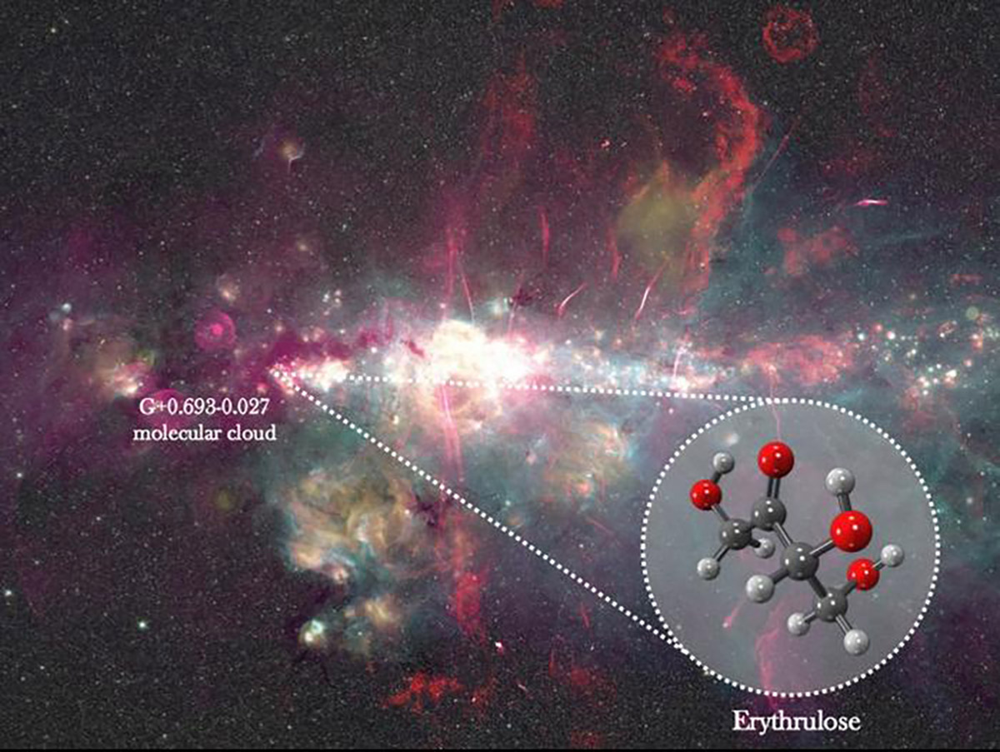

October 06, 2026
Sugar in Space: The First Sugar Ever Detected Between the Stars

Ashley Barnes / Izaskun Jiménez-Serra / Juan García de la Concepción
They found sugar between the stars. Not a metaphor — an actual sugar, the chemical kind.
An international team led by astrochemist Izaskun Jiménez-Serra of the Centro de Astrobiología in Madrid has detected erythrulose, a four-carbon sugar, in a molecular cloud called G+0.693−0.027, about 26,700 light-years away near the center of our galaxy. It is the first sugar ever identified in the interstellar medium — the dust and gas drifting between stars. The result was published in Nature Astronomy.
On Earth, erythrulose shows up in raspberries and sunless tanning products. In space, it was found the only way molecules can be found there: by listening. Molecules in the cold of a molecular cloud are too cold to do anything but rotate — and as they rotate, they emit light at very specific radio frequencies. Jiménez-Serra's team used two radio telescopes in Spain, the Yebes 40-metre and the IRAM 30-metre, and matched 12 spectral lines against laboratory measurements of erythrulose made at the University of the Basque Country. Twelve independent fingerprints. That's not a maybe.
The surprises kept coming. Erythrulose is at least eight times more abundant than the simpler three-carbon sugars in the same cloud — which is odd, because the prevailing view was that interstellar molecules grow one carbon at a time, big-first-first-last. Instead, the evidence says erythrulose assembled from simpler two-carbon precursors reacting on the icy surfaces of interstellar dust grains. The universe, it turns out, can take a shortcut.
Why does sugar in space matter? Because of what sugars can become. Erythrulose converts into threose in watery environments, and threose is a building block of threose nucleic acids (TNAs) — proposed ancestors of RNA, proposed ancestors of DNA. One of the hardest problems in prebiotic chemistry is making sugars efficiently in the first place. If space can hand them to you ready-made, the problem gets easier.
The team ran the numbers: between 0.5 and 50 million tonnes of this sugar could have reached Earth during the Late Heavy Bombardment, 4.1 to 3.8 billion years ago, delivered by asteroids and comets. The ingredients of life may have been raining down before there was life to use them.
The next target is the holy grail itself: ribose, the sugar backbone of RNA. "We'd love to detect ribose," Jiménez-Serra said. "That's something of a Holy Grail in astrobiology."
We're not saying life started in space. But the universe was stocking the pantry before the kitchen existed — and we're just getting good enough at listening to hear it.
What would you want to hear from the space between the stars next?
Source: BBC Sky at Night Magazine, Oct 5, 2026 — read the original report
← Back to latest stories